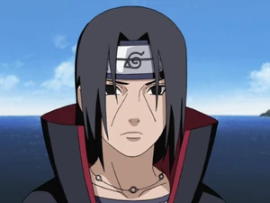

Itachi Uchiha

Peronsal details
Name:
Itachi Uchiha
Address:
Konoha (hidden leaves village)
Email:
Classified
Number
Classified
Gender:
Male
Skills
Master the Genjustsu technique
Able to breath fire ball
Can summon and control crows
Unlock the Mangekyo Sharingan
Able to activate Susanoo
Quick learner, can adapt and handle new situation fast
Experience
Experience the 3rd shinobi war at age 3
Rescueing people during the 9 tail fox attack on the village
Babysitting sasuke
Experience in being a double agent
Massacre the whole Uchiha clan
Join and infiltrate the Akatsuki
Help recruited Deidara and Hiden to the Akatsuki
Insist in helping the shinobi alliance won the 4th great shinobi war after getting reincarnated
Education/Acadmemy
Graduate the upper Genin exam at age 6
Became a Chunin at age 10
Enter the Anbu at age 11
promoted to Anbu captain at 12